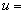
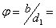
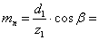

Претходни прорачун зупчаног пара
У претходном прорачуну потребно је одредити пречник подеоне кружнице малог зупчаника из услова да радни напони на боковима зубаца косозубих зупчаника морају бити мањи од дозвољеног:
="> 125.090 
где смо претходно израчунали следеће величине:
Обртни момент :
1.091348181 = 1091348.181 
Угаона брзина :
73.304
Трајна динамичка издржљивост бокова зубаца (према табели Т 4.5 М.Е II за Č.1220):
1480 
Степен сигурности
против разарања бокова зубаца:  1.4 до 2, усвајам: 1.7
1.4 до 2, усвајам: 1.7
Дозвољени напон :
870.588
Кинематски преносни однос, преносни однос у кинематском полу:  2
Потребно је да одредимо податке са дијаграма, који зависе од пречника подеоне кружнице (), који још нисмо израчунали, због чега претпостављамо да је пречник подеоне кружнице:
125
брзина зупчаника на подеоној кружници:
4.581 
Рачунамо однос ( карактеристика зупчаника):
1.145
према дијаграму
на Сл. 4.47, и за задан квалитет израде зупчаника према улазним подацима:  , можемо очитати следеће факторе:
, можемо очитати следеће факторе:
 1.101
1.101
1.053
Фактор унутрашњих динамичких сила се рачуна по изразу:
Степен спрезања бочних линија се одређује у завршном прорачуну и тренутно је непозната величина, па привремено претпостављамо да је >1.
Кад урадимо завршни прорачун, знаћемо вредност за и унети неопходне исправке:
1.073
0.422 - степен спрезања бочних линија одређен у завршном прорачуну!
Према табели Т4.4, за задан фактор ширине зупчаника  0.6, те оба зупчаника симетрично постављена између лежаја (према улазним подацима), можемо одредити фактор расподеле оптерећења зупчаника:
1.035
Фактор оптерећења износи:
1.389
Утицај еластичности материјала:
189
За цилиндричне зупчанике са косим зупцима са позитивним померањем профила: 0"> можемо израчунати фактор :
442.460
Модул зупчаника у равни нормалној на бок зупца:
 4.985
Напомена
: фактори за фино штеловање (подешавање) тачности резултата са жељеним бројем децимала су:  , и .
, и .
Т 4.2 М.Е. II усваја се стандардна вредност:
 5
5
Усвајати првенствено величине из I групе приоритета, не мора обавезно већа вредност (што је већи модул зупчаника, већи је зупчаник, већи је степен сигурности против лома зубаца - тежа конструкција)!
Модул у равни нормалној на кинематску осу:
 5.019
5.019